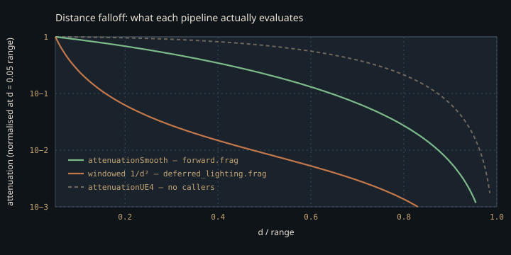

Monograph · Tree · ← Sitemap · Lighting includes
shaders
Lighting includes
IBL, attenuation, light types, phase, blinn_phong.
What the include graph actually says
Five headers sit in `shaders/includes/lighting/`, and every `#include` of that directory in the whole tree amounts to four lines: `forward.frag` pulls `light_attenuation.glsl` in its PBR branch and `blinn_phong.glsl` in the legacy branch, and `cloud.comp` and `volumetric_scatter.comp` — both under `shaders/_disabled/` — pull `phase.glsl`. `ibl.glsl` and `light_types.glsl` appear in no `#include` anywhere.
#include "includes/lighting/light_attenuation.glsl"shaders/core/forward.frag:71That would be a boring page if an unused file implied unused math. It does not: `deferred_lighting.frag`, the shader that actually runs, re-derives the spot-cone ramp, the light-direction and ambient helpers, and the whole split-sum IBL block inline — the same algebra, none of it included from here. The one thing it does *not* re-derive is the distance law the forward shader adopted.
Treat this directory as a proposal, not an implementation. The only shader that includes any of it is `forward.frag`, whose pipeline no shipped binary ever binds. Everything that ships is in `deferred_lighting.frag`, which copied some of this math verbatim and rejected the rest. The interesting failures are where the copy and the original disagree.
The falloff forward.frag asks for
`attenuationSmooth` — commented in the header as "current OHAO default" — is one of exactly two functions in `light_attenuation.glsl` that anything in the tree calls; `attenuationSpotCone` is the other, and every call site is in `forward.frag`'s PBR branch:
$d$ is the surface-to-light distance and $r$ is the light's range, which travels in the `w` channel of the packed direction vector. The first factor is an inverse-square-*shaped* core that stays finite at $d=0$, where it equals exactly 1. The second is a squared edge ramp, so both the value and its first derivative vanish at $d = r$: a light leaving its range fades out instead of popping.
float attenuation = 1.0 / (1.0 + (distance * distance) / (range * range));shaders/includes/lighting/light_attenuation.glsl:52Point and spot lights both take it; directional lights skip attenuation entirely, and spots multiply in a plain linear cone ramp between the inner and outer cosines — the header's smoothstepped `attenuationSpotConeSmooth` variant has no callers.
attenuation *= attenuationSpotCone(cosTheta, innerCone, outerCone);shaders/core/forward.frag:110The price of that bounded shape is that $r$ scales brightness everywhere, not just near the cutoff. Both factors rise monotonically with $r$ at fixed $d$, so widening a light's range *brightens* it at every distance: at $d = 5$, taking $r$ from 10 to 20 moves the factor from $0.8 \times 0.25 = 0.200$ to $0.941 \times 0.5625 = 0.529$. Range is not a cutoff knob here; it is a second intensity knob.
Nothing runs this. `forward.frag`'s pipeline is created on every renderer init, but the two `vkCmdBindPipeline` calls that take it sit on the fall-through `m_renderMode == RenderMode::Forward` path, and the CLI mode resolver every example shares can return only `Deferred`, `RTRealtime` or `RTOffline`.
vkCmdBindPipeline(cmd, VK_PIPELINE_BIND_POINT_GRAPHICS, m_pipeline);ohao/gpu/vulkan/render_dispatch.cpp:315if (opts.useDeferred) return RenderMode::Deferred;examples/example_cli.hpp:84The falloff the deferred pipeline evaluates
`deferred_lighting.frag` does not include the header. It declares its own `calculateAttenuation`, and picks a different law — Karis-style windowed inverse-square:
Same symbols. This one is correct in the far field and clamps the $1/d^{2}$ singularity at 100 rather than removing it, with a quartic window that reaches zero at $d = r$ while staying near 1 over most of the light's useful volume.
float windowing = clamp(1.0 - pow(distance / range, 4.0), 0.0, 1.0);shaders/core/deferred_lighting.frag:96The header already contains the near-match — `attenuationUE4` — with zero callers. It also differs from the deferred version in a way that changes units: it normalises distance by range *before* squaring, so its core is dimensionless and bounded by 1.
float d = distance / range;shaders/includes/lighting/light_attenuation.glsl:38
Two raster pipelines, one `LightData`, two incompatible falloff laws. The forward law is dimensionless and peaks at 1; the deferred law carries 1/length² units and peaks at 100. They are not related by any constant — the ratio between them varies with both distance and range — so a light intensity tuned in Deferred mode is simply wrong in Forward mode. The obvious fix — one shared include — sits directly above `attenuationSmooth` in `light_attenuation.glsl`, unused, because adopting a physical law means re-authoring every intensity that was tuned against the bounded one.
Three reasons ibl.glsl cannot simply be included
`ibl.glsl` declares `PI` and `MAX_REFLECTION_LOD` as `const float`s. `math.glsl` defines the first as an object-like macro and pulls in `constants.glsl`, which defines the second the same way. `deferred_lighting.frag` reaches `math.glsl` transitively through `brdf_ggx.glsl` → `brdf_common.glsl`; `forward.frag` includes it directly, two lines before it includes `brdf_ggx.glsl`.
const float PI = 3.14159265359;shaders/includes/lighting/ibl.glsl:7#define PI 3.14159265359shaders/includes/common/math.glsl:17#define MAX_REFLECTION_LOD 4.0shaders/includes/common/constants.glsl:63Include `math.glsl` first and the macro rewrites the declaration into `const float 3.14159265359 = 3.14159265359;` — a syntax error, not a redefinition warning. Guard `PI` and `glslc` reports the identical error one line down, at `MAX_REFLECTION_LOD`. The failure is order-dependent: put `ibl.glsl` first and both `const float`s are parsed before either macro exists, and the pair compiles clean. `phase.glsl` sidesteps the question entirely by guarding its own `PI`, which is why it composes in either order.
const float MAX_REFLECTION_LOD = 4.0;shaders/includes/lighting/ibl.glsl:8#ifndef PIshaders/includes/lighting/phase.glsl:10Guarding both constants still is not enough. `fresnelSchlickRoughness` has a full body in `ibl.glsl` and another — same formula, `saturate` for `clamp` — in `brdf_common.glsl`, and GLSL has no weak-symbol rule: `glslc` rejects whichever definition it sees second, in either include order. Both raster shaders reach `brdf_common.glsl` through `brdf_ggx.glsl`, so this one cannot be ordered around. Adopting `ibl.glsl` means deleting its Fresnel and taking the BRDF library's.
vec3 fresnelSchlickRoughness(float cosTheta, vec3 F0, float roughness) {shaders/includes/lighting/ibl.glsl:11vec3 fresnelSchlickRoughness(float cosTheta, vec3 F0, float roughness) {shaders/includes/brdf/brdf_common.glsl:27The IBL that was built twice and wired zero times
`ibl.glsl` is a complete split-sum evaluator — Fresnel-with-roughness, irradiance cubemap fetch, prefiltered specular fetch, BRDF LUT lookup — with a matching C++ half in `IBLProcessor`, which turns an equirectangular HDR into a cubemap, prefilters it across five mip levels spanning roughness 0 to 1 in quarter steps, and integrates the LUT.
static constexpr uint32_t PREFILTER_MIP_LEVELS = 5;ohao/render/ibl/ibl_processor.hpp:44Neither half runs. `calculateIBL` is in no shader, and `IBLProcessor` is compiled into `ohao_renderer` by the source glob but never constructed — its only mention outside its own translation unit is an `#include` in `render_module.hpp`, itself included by nothing.
What ships is the same split-sum algebra, written inline in `deferred_lighting.frag` and fed from the 2D equirect environment map with a mip level as roughness proxy instead of a prefiltered cubemap:
float lod = roughness * 9.0; // assuming 10 mip levels for 1024x512shaders/core/deferred_lighting.frag:281The BRDF LUT it samples is, in practice, the pass's 1×1 fallback image. `DeferredLightingPass::setIBLTextures` exists and `DeferredRenderer` forwards to it, but nothing calls the outer setter, so `m_brdfLUTView` stays null and binding 9 resolves to the dummy view:
imageInfos[8].imageView = m_brdfLUTView != VK_NULL_HANDLE ? m_brdfLUTView : fallbackView;ohao/render/deferred/deferred_lighting_pass.cpp:353That dummy is a 1×1 RGBA8 image created with `VK_IMAGE_USAGE_SAMPLED_BIT` and nothing else — it has no transfer usage, so no upload is even permitted — and it receives one layout transition and no writes. Its texel is Vulkan-undefined, not guaranteed zero.
imageInfo.usage = VK_IMAGE_USAGE_SAMPLED_BIT;ohao/render/deferred/deferred_lighting_pass.cpp:775So the shader's "no real LUT bound" branch is not defensive paranoia about a hypothetical: it is the only thing standing between the deferred metals and whatever that allocation happens to contain. It fires when the sampled pair sums below `1e-4` and substitutes an analytic `vec2(max(1-roughness, 0.04), roughness*0.25)`. Whether the engine's environment-specular response today is that analytic curve or an undefined texel is not something the code decides.
brdf = vec2(max(1.0 - roughness, 0.04), roughness * 0.25);shaders/core/deferred_lighting.frag:296Phase functions with no medium
`phase.glsl` is the one header here that nothing has copied: grepping for its distinguishing constants (`1.55*g - 0.55*g³`, `3/(16π)`) finds nothing outside this file, and no sky or fog pass inlines a lobe. It is also the only header here with a caller outside `forward.frag` — a single `henyeyGreenstein` in `volumetric_scatter.comp`, under `shaders/_disabled/`; `cloud.comp` includes the header and calls nothing from it.
$\theta$ is the angle between view and light directions and $g \in [-1,1]$ is the asymmetry — positive forward-scattering, negative back. The implementation floors the base of the $3/2$ power at $10^{-4}$: as $g \to 1$ with $\cos\theta \to 1$ the denominator collapses to zero, and without the floor the lobe returns `inf` or, at $g = 1$ exactly, a $0/0$ `NaN`.
return (1.0 - g2) / (4.0 * PI * pow(max(1.0 + g2 - 2.0 * g * cosTheta, 0.0001), 1.5));shaders/includes/lighting/phase.glsl:21There is a trap in the word "disabled", and a second trap behind it. The shader CMake globs recursively with no exclusion, so both consumers land on the `shaders` target's dependency list and a syntax error in either breaks `cmake --build build --target shaders`. But that target is declared without `ALL`, and nothing in the tree calls `add_dependencies` on it, so `shaders/all` in the generated build system has no prerequisites: a plain `cmake --build build` compiles no shaders at all. The disabled files only bite whoever asks for shaders by name.
file(GLOB_RECURSE SHADER_SOURCESshaders/CMakeLists.txt:9add_custom_target(shadersshaders/CMakeLists.txt:54The C++ side reads like the symmetric fix and is not one: the render library's glob carries a `/_disabled/` exclusion, but no `_disabled` directory exists anywhere under `ohao/`, so the filter matches zero files.
list(FILTER RENDERER_SOURCES EXCLUDE REGEX "/_disabled/")ohao/render/CMakeLists.txt:17blinn_phong.glsl and the scar it documents
This header sits behind the `#else` of a feature flag that defaults on, and `glslc` is invoked with no `-D` arguments anywhere in the build, so the branch never compiles.
#define USE_PBR 1 // Enable PBR by defaultshaders/core/forward.frag:17COMMAND ${GLSLC} --target-env=vulkan1.3 -I${CMAKE_CURRENT_SOURCE_DIR} -I${CMAKE_CURRENT_SOURCE_DIR}/includes ${SHADER} -o ${SPIRV}shaders/CMakeLists.txt:46Its `calculateAttenuation` is a line-for-line copy of `attenuationSmooth` with `clamp(x, 0.0, 1.0)` substituted for `saturate` — the file includes nothing, so it cannot reach the helper in `math.glsl`. The comment above its entry point is worth more than the code beneath it:
// CRITICAL: Pass light INDEX, not Light struct, to avoid GLSL struct copy corruption!shaders/includes/lighting/blinn_phong.glsl:24The PBR branch obeys it — `getLightParams` takes an `int lightIndex` and indexes the UBO directly — while `deferred_lighting.frag` copies `Light` out of its buffer freely, so whatever produced the original corruption was not universal.
light_types.glsl: the abstraction that lost
`LightParams`, `ShadowParams`, `getLightDirection`, `getLightDistance`, `calculateAmbient`, `lightCastsShadow` — none of these are referenced anywhere in `shaders/` or `ohao/`. The C++ `getLightDirection` that grep turns up is an unrelated `DeferredRenderer` accessor. The bodies still run, though: `deferred_lighting.frag` branches on light type to pick `normalize(-direction)` or `normalize(lightPos - fragPos)` exactly as `getLightDirection` does, and builds its ambient term from the same intensity·AO·albedo product.
vec3 ambient = vec3(lighting.ambientIntensity) * albedo * ao;shaders/core/deferred_lighting.frag:259The packing it documents is real, and is the contract both raster pipelines depend on: type, range, intensity and shadow-map index ride in the `w` and `params` channels of four `vec4`s, followed by a 64-byte light-space matrix — 128 bytes per light, `std140`-compatible by construction.
alignas(16) glm::vec4 params; // x = innerCone, y = outerCone, z = shadowMapIndex (-1=none), w = unusedohao/gpu/vulkan/renderer.hpp:80vec4 params; // x = innerCone, y = outerCone, z = shadowMapIndex (-1=none), w = unusedshaders/includes/common/types.glsl:23It also re-declares the light-type enum under an `#ifndef`, commented as relying on the preprocessor "using the first definition". Values match `types.glsl` exactly so nothing breaks, but that rule is not real — identical redefinition is legal in any order, a differing one is a diagnostic — so do not lean on the comment when adding a fourth light type.
Contracts
- `light_attenuation.glsl` and `blinn_phong.glsl` hold two copies of the same smooth falloff. Editing one without the other desynchronises the forward PBR branch from the legacy one — and nothing catches it, because the legacy branch is not compiled until someone builds with `USE_PBR=0`.
- Forward and deferred point-light attenuation are different functions with different units, so intensities are not portable between `RenderMode::Forward` and `RenderMode::Deferred`. No shipped binary selects Forward: the forward pipeline is created on every init and never bound, so the header's law is compiled into SPIR-V but executed by nothing.
- Two independent things block `ibl.glsl` from any shader that reaches `brdf_common.glsl`. Guarding its `const float PI` and `const float MAX_REFLECTION_LOD` fixes only the order-dependent parse errors; the duplicate `fresnelSchlickRoughness` body fails in either order and has to be deleted.
- Nothing calls `setIBLTextures`, so binding 9 resolves to a 1×1 image that is never written and cannot be. The deferred environment-specular term therefore rests on a `< 1e-4` guard over undefined memory. Wiring `IBLProcessor` in would change every metal — a re-lighting job, not a bug fix.
Source files
shaders/core/forward.fragshaders/includes/lighting/light_attenuation.glslohao/gpu/vulkan/render_dispatch.cppexamples/example_cli.hppshaders/core/deferred_lighting.fragshaders/includes/lighting/ibl.glslshaders/includes/common/math.glslshaders/includes/common/constants.glslshaders/includes/lighting/phase.glslshaders/includes/brdf/brdf_common.glslohao/render/ibl/ibl_processor.hppohao/render/deferred/deferred_lighting_pass.cppshaders/CMakeLists.txtohao/render/CMakeLists.txtshaders/includes/lighting/blinn_phong.glslohao/gpu/vulkan/renderer.hppshaders/includes/common/types.glslshaders/includes/lighting/light_types.glslParent hub for the full pipeline narrative; this page is the file-level design unit. Sitemap · hover glossary terms anywhere.